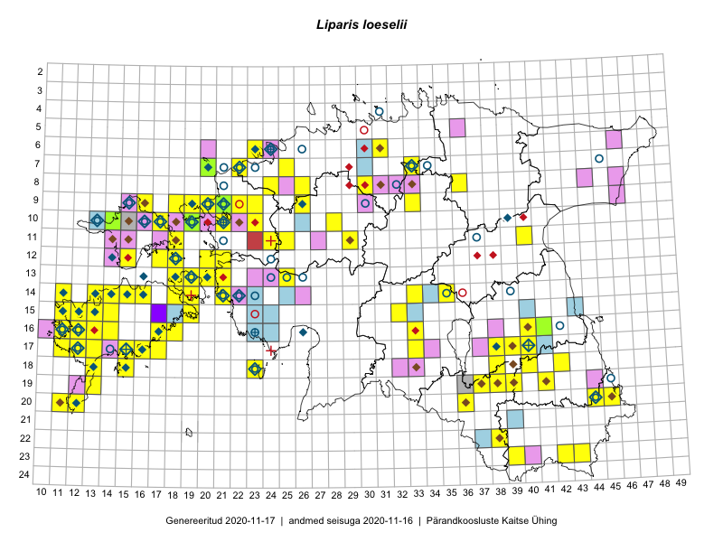

Liparis loeselii
Uuendatud: 2016-12-08
Kaardile koondatud taksonid: Liparis loeselii (L.) Rich.

Kaart põhineb 123 vaatlusel. Taime on leitud 48 ruudust.
| Ruut | Vaatleja(d) | Vaatlusaeg | Kirje tüüp | Viide andmebaasikirjele |
|---|---|---|---|---|
| 16-17 | Kadri Tali, Meeli Mesipuu | 2015-07-03 | punkt | vaata PlutoFis |
| 16-17 | Kadri Tali, Meeli Mesipuu | 2015-07-03 | punkt | vaata PlutoFis |
| 20-11 | Toomas Kukk, Peedu Saar | 2015-08-05 | ruut/ala | vaata PlutoFis |
| 20-11 | Toomas Kukk | 2015-08-06 | punkt | vaata PlutoFis |
| 23-42 | Peedu Saar, Ott Luuk | 2015-08-12 | punkt | vaata PlutoFis |
| 23-42 | Peedu Saar, Ott Luuk | 2015-08-12 | ruut/ala | vaata PlutoFis |
| 12-21 | Tiit Hallikma, Toomas Kukk | 2015-08-27 | ruut/ala | vaata PlutoFis |
| 16-17 | Peedu Saar | 2015-09-07 | ruut/ala | vaata PlutoFis |
| 16-17 | Peedu Saar | 2015-09-07 | punkt | vaata PlutoFis |
| 16-17 | Meeli Mesipuu, Kadri Tali | 2015-07-06 | ruut/ala | vaata PlutoFis |
| 16-17 | Meeli Mesipuu, Kadri Tali | 2015-07-06 | punkt | vaata PlutoFis |
| 16-17 | Meeli Mesipuu, Kadri Tali | 2015-07-06 | punkt | vaata PlutoFis |
| 11-18 | Eeva-Maria Jeletsky, Tarmo Niitla | 2015-06-17 | punkt | vaata PlutoFis |
| 12-15 | Eeva-Maria Jeletsky, Tarmo Niitla | 2015-06-25 | punkt | vaata PlutoFis |
| 12-15 | Eeva-Maria Jeletsky, Tarmo Niitla | 2015-06-25 | punkt | vaata PlutoFis |
| 11-18 | Eeva-Maria Jeletsky, Tarmo Niitla | 2015-06-17 | ruut/ala | vaata PlutoFis |
| 15-11 | Triin Reitalu, Mari Reitalu | 2015-06-29 | ruut/ala | vaata PlutoFis |
| 15-11 | Triin Reitalu, Mari Reitalu | 2015-06-29 | punkt | vaata PlutoFis |
| 16-11 | Mari Reitalu, Triin Reitalu | 2015-08-19 | ruut/ala | vaata PlutoFis |
| 16-11 | Mari Reitalu, Triin Reitalu | 2015-08-19 | punkt | vaata PlutoFis |
| 14-13 | Mari Reitalu, Triin Reitalu | 2015-08-14 | ruut/ala | vaata PlutoFis |
| 14-13 | Mari Reitalu, Triin Reitalu | 2015-08-14 | punkt | vaata PlutoFis |
| 17-33 | Maria Abakumova, Helle Mäemets | 2015-07-03 | ruut/ala | vaata PlutoFis |
| 17-12 | Mari Reitalu | 2015-08-13 | ruut/ala | vaata PlutoFis |
| 17-12 | Mari Reitalu | 2015-08-13 | punkt | vaata PlutoFis |
| 17-12 | Mari Reitalu | 2015-07-02 | ruut/ala | vaata PlutoFis |
| 17-12 | Mari Reitalu | 2015-07-02 | punkt | vaata PlutoFis |
| 16-12 | Mari Reitalu | 2015-09-03 | ruut/ala | vaata PlutoFis |
| 16-12 | Mari Reitalu | 2015-09-03 | punkt | vaata PlutoFis |
| 14-11 | Mari Reitalu, Oliver Parrest | 2015-07-14 | ruut/ala | vaata PlutoFis |
| 17-13 | Mari Reitalu, Oliver Parrest | 2015-08-12 | ruut/ala | vaata PlutoFis |
| 14-13 | Mari Reitalu, Oliver Parrest | 2015-07-21 | ruut/ala | vaata PlutoFis |
| 13-18 | Meeli Mesipuu, Kadri Tali | 2015-06-25 | ruut/ala | vaata PlutoFis |
| 15-12 | Mari Reitalu, Oliver Parrest | 2015-07-21 | ruut/ala | vaata PlutoFis |
| 15-13 | Mari Reitalu, Oliver Parrest | 2015-07-24 | ruut/ala | vaata PlutoFis |
| 13-18 | Meeli Mesipuu, Kadri Tali | 2015-06-26 | punkt | vaata PlutoFis |
| 17-33 | Maria Abakumova, Helle Mäemets | 2015-07-03 | punkt | vaata PlutoFis |
| 15-11 | Mari Reitalu, Oliver Parrest | 2015-07-16 | ruut/ala | vaata PlutoFis |
| 18-13 | Mari Reitalu | 2014-06-14 | ruut/ala | vaata PlutoFis |
| 16-11 | Triin Reitalu, Mari Reitalu | 2015-08-09 | ruut/ala | vaata PlutoFis |
| 15-13 | Mari Reitalu, Oliver Parrest | 2015-07-24 | punkt | vaata PlutoFis |
| 14-13 | Mari Reitalu, Oliver Parrest | 2015-07-21 | punkt | vaata PlutoFis |
| 15-12 | Mari Reitalu, Oliver Parrest | 2015-06-21 | punkt | vaata PlutoFis |
| 15-12 | Mari Reitalu, Oliver Parrest | 2015-06-21 | punkt | vaata PlutoFis |
| 14-11 | Mari Reitalu, Oliver Parrest | 2015-07-14 | punkt | vaata PlutoFis |
| 17-15 | Karin Kikas, Elle Rajandu | 2015-07-22 | ruut/ala | vaata PlutoFis |
| 17-15 | Karin Kikas, Elle Rajandu | 2015-07-22 | punkt | vaata PlutoFis |
| 13-20 | Kadri Tali | 2015-06-05 | ruut/ala | vaata PlutoFis |
| 16-40 | Maret Gerz, Ott Luuk | 2014-06-25 | ruut/ala | vaata PlutoFis |
| 20-11 | Mari Reitalu, Triin Reitalu | 2015-07-19 | ruut/ala | vaata PlutoFis |
| 20-11 | Mari Reitalu, Triin Reitalu | 2015-07-19 | punkt | vaata PlutoFis |
| 16-11 | Mari Reitalu, Triin Reitalu | 2015-08-09 | ruut/ala | vaata PlutoFis |
| 15-11 | Oliver Parrest, Mari Reitalu | 2015-07-16 | punkt | vaata PlutoFis |
| 09-18 | Toomas Kukk, Sander Laherand | 2016-07-07 | ruut/ala | vaata PlutoFis |
| 10-17 | Eeva-Maria Jeletsky, Tarmo Niitla | 2016-07-14 | punkt | vaata PlutoFis |
| 10-17 | Eeva-Maria Jeletsky, Tarmo Niitla | 2016-07-14 | ruut/ala | vaata PlutoFis |
| 09-18 | Sander Laherand, Toomas Kukk | 2016-07-07 | punkt | vaata PlutoFis |
| 17-16 | Meeli Mesipuu, Toomas Kukk | 2016-08-12 | punkt | vaata PlutoFis |
| 17-16 | Meeli Mesipuu, Toomas Kukk | 2016-08-12 | punkt | vaata PlutoFis |
| 12-17 | Thea Kull, Sander Laherand | 2016-08-11 | ruut/ala | vaata PlutoFis |
| 18-38 | Timo Luhamäe, Meeli Mesipuu | 2016-06-13 | ruut/ala | vaata PlutoFis |
| 15-14 | Peedu Saar, Maret Gerz | 2016-08-12 | punkt | vaata PlutoFis |
| 12-17 | Sander Laherand, Thea Kull, Nele Jõessar | 2016-08-11 | punkt | vaata PlutoFis |
| 13-21 | Maret Gerz, Aat Sarv | 2016-07-05 | punkt | vaata PlutoFis |
| 14-15 | Maret Gerz, Peedu Saar | 2016-08-11 | punkt | vaata PlutoFis |
| 15-14 | Maret Gerz, Peedu Saar | 2016-08-12 | ruut/ala | vaata PlutoFis |
| 20-36 | Thea Kull, Ott Luuk | 2016-08-23 | ruut/ala | vaata PlutoFis |
| 17-17 | Toomas Kukk, Meeli Mesipuu | 2016-08-12 | punkt | vaata PlutoFis |
| 17-17 | Toomas Kukk, Meeli Mesipuu | 2016-08-12 | punkt | vaata PlutoFis |
| 17-15 | Toomas Kukk, Meeli Mesipuu, Johannes Kõdar | 2016-08-11 | punkt | vaata PlutoFis |
| 17-15 | Toomas Kukk, Meeli Mesipuu, Johannes Kõdar | 2016-08-11 | punkt | vaata PlutoFis |
| 17-15 | Toomas Kukk, Meeli Mesipuu, Johannes Kõdar | 2016-08-11 | punkt | vaata PlutoFis |
| 17-15 | Toomas Kukk, Meeli Mesipuu, Johannes Kõdar | 2016-08-11 | punkt | vaata PlutoFis |
| 17-17 | Toomas Kukk, Meeli Mesipuu | 2016-08-12 | ruut/ala | vaata PlutoFis |
| 17-16 | Toomas Kukk, Meeli Mesipuu | 2016-08-12 | ruut/ala | vaata PlutoFis |
| 14-14 | Sirje Azarov, Mari Reitalu | 2016-07-26 | punkt | vaata PlutoFis |
| 09-20 | Timo Luhamäe, Peedu Saar | 2016-07-07 | punkt | vaata PlutoFis |
| 14-18 | Sirje Azarov, Mari Reitalu | 2016-08-09 | punkt | vaata PlutoFis |
| 16-18 | Sirje Azarov, Mari Reitalu | 2016-08-10 | punkt | vaata PlutoFis |
| 07-22 | Mari Reitalu, Eerik Leibak | 2016-07-07 | ruut/ala | vaata PlutoFis |
| 07-33 | Peedu Saar, Toomas Kukk | 2016-09-13 | ruut/ala | vaata PlutoFis |
| 14-14 | Mari Reitalu, Sirje Azarov | 2016-07-26 | ruut/ala | vaata PlutoFis |
| 14-18 | Mari Reitalu, Sirje Azarov | 2016-08-09 | ruut/ala | vaata PlutoFis |
| 15-19 | Mari Reitalu, Triin Reitalu | 2016-08-14 | ruut/ala | vaata PlutoFis |
| 16-18 | Mari Reitalu, Sirje Azarov | 2016-08-08 | ruut/ala | vaata PlutoFis |
| 07-33 | Peedu Saar, Toomas Kukk | 2016-09-15 | punkt | vaata PlutoFis |
| 07-33 | Peedu Saar, Toomas Kukk | 2016-09-15 | punkt | vaata PlutoFis |
| 07-22 | Mari Reitalu, Triin Reitalu, Sirje Azarov | 2016-07-08 | punkt | vaata PlutoFis |
| 07-22 | Mari Reitalu, Triin Reitalu, Sirje Azarov | 2016-07-10 | punkt | vaata PlutoFis |
| 15-19 | Mari Reitalu, Triin Reitalu | 2016-08-14 | punkt | vaata PlutoFis |
| 18-23 | Peedu Saar, Ott Luuk | 2016-09-21 | punkt | vaata PlutoFis |
| 16-11 | Mari Reitalu, Triin Reitalu | 2016-06-02 | punkt | vaata PlutoFis |
| 14-16 | Peedu Saar, Ott Luuk | 2016-08-31 | punkt | vaata PlutoFis |
| 18-23 | Ott Luuk, Peedu Saar | 2016-09-21 | ruut/ala | vaata PlutoFis |
| 09-19 | Ott Luuk, Meeli Mesipuu | 2016-09-16 | punkt | vaata PlutoFis |
| 10-19 | Ott Luuk, Meeli Mesipuu | 2016-09-15 | punkt | vaata PlutoFis |
| 10-19 | Ott Luuk, Meeli Mesipuu | 2016-09-15 | ruut/ala | vaata PlutoFis |
| 14-13 | Toomas Kukk, Meeli Mesipuu, Mari Reitalu | 2016-10-06 | ruut/ala | vaata PlutoFis |
| 14-13 | Toomas Kukk, Meeli Mesipuu, Mari Reitalu | 2016-10-06 | punkt | vaata PlutoFis |
| 19-13 | Meeli Mesipuu | 2016-06-30 | ruut/ala | vaata PlutoFis |
| 14-16 | Ott Luuk, Peedu Saar | 2016-08-31 | ruut/ala | vaata PlutoFis |
| 09-20 | Peedu Saar, Timo Luhamäe | 2016-07-07 | ruut/ala | vaata PlutoFis |
| 20-36 | Ott Luuk, Thea Kull | 2016-08-23 | punkt | vaata PlutoFis |
| 14-33 | Ott Luuk, Indrek Tammekänd | 2016-07-21 | ruut/ala | vaata PlutoFis |
| 10-19 | Meeli Mesipuu, Ott Luuk | 2016-09-15 | punkt | vaata PlutoFis |
| 09-19 | Meeli Mesipuu, Ott Luuk | 2016-09-16 | ruut/ala | vaata PlutoFis |
| 17-15 | Meeli Mesipuu, Toomas Kukk, Johannes Kõdar | 2016-08-11 | ruut/ala | vaata PlutoFis |
| 17-17 | Meeli Mesipuu, Toomas Kukk | 2016-08-16 | punkt | vaata PlutoFis |
| 17-17 | Meeli Mesipuu, Toomas Kukk | 2016-08-16 | punkt | vaata PlutoFis |
| 17-17 | Meeli Mesipuu, Toomas Kukk | 2016-08-16 | punkt | vaata PlutoFis |
| 17-17 | Meeli Mesipuu, Toomas Kukk | 2016-08-16 | punkt | vaata PlutoFis |
| 17-17 | Meeli Mesipuu, Toomas Kukk | 2016-08-16 | punkt | vaata PlutoFis |
| 17-17 | Meeli Mesipuu, Toomas Kukk | 2016-08-16 | punkt | vaata PlutoFis |
| 17-17 | Meeli Mesipuu, Toomas Kukk | 2016-08-16 | punkt | vaata PlutoFis |
| 14-13 | Meeli Mesipuu, Toomas Kukk, Mari Reitalu | 2016-10-06 | punkt | vaata PlutoFis |
| 14-11 | Meeli Mesipuu | 2014-08-24 | punkt | vaata PlutoFis |
| 14-11 | Meeli Mesipuu | 2014-08-24 | punkt | vaata PlutoFis |
| 14-11 | Meeli Mesipuu | 2014-08-24 | punkt | vaata PlutoFis |
| 12-20 | Meeli Mesipuu, Maret Gerz | 2015-08-25 | ruut/ala | vaata PlutoFis |
| 06-23 | Meeli Mesipuu | 2013-06-19 | punkt | vaata PlutoFis |
| 09-21 | Jaak-Albert Metsoja, Mari Metsoja | 2016-07-07 | ruut/ala | vaata PlutoFis |
| 08-26 | Jaak-Albert Metsoja, Mari Metsoja | 2016-07-04 | ruut/ala | vaata PlutoFis |
| 08-26 | Jaak-Albert Metsoja, Mari Metsoja | 2016-07-04 | punkt | vaata PlutoFis |